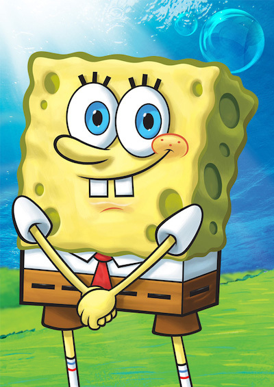
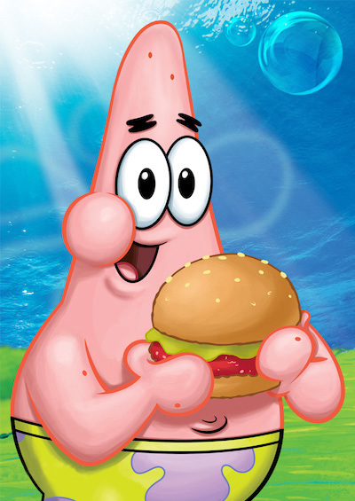
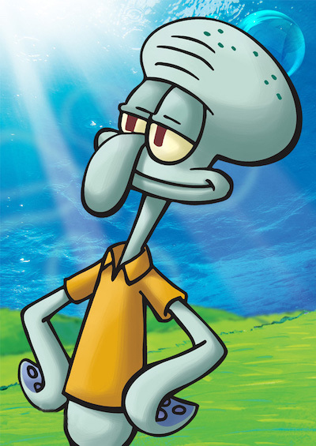
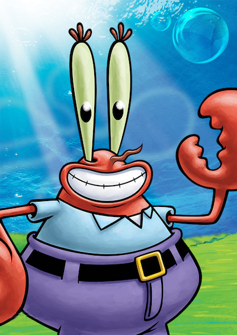
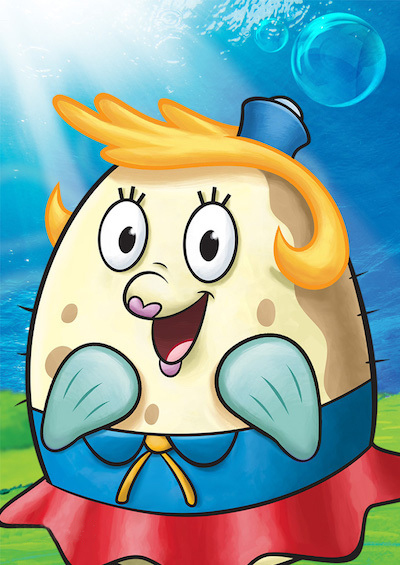
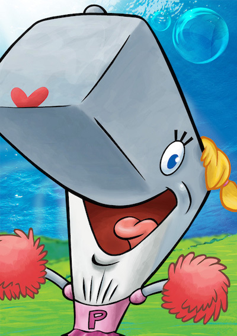
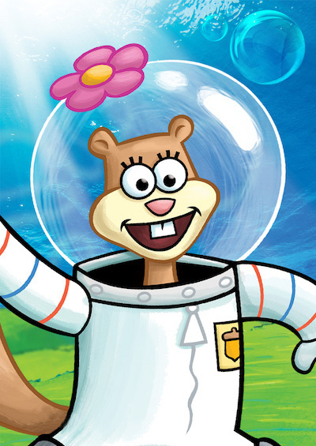
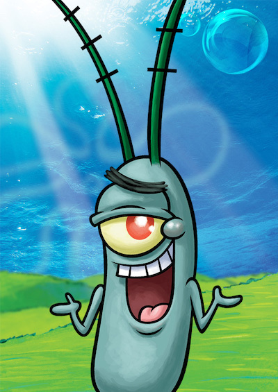
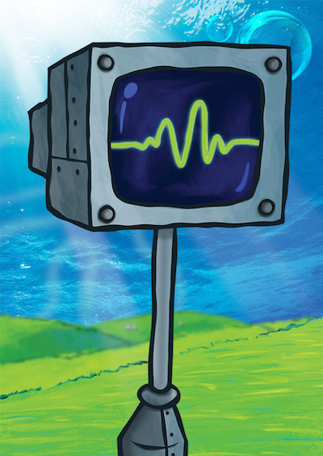

角色介绍
 海绵宝宝 同名角色及主角。黄色长方形海绵。生日是1986年7月14日。拥有两只左手，各四根手指。以棕色短裤、白色衬衫和红色领带为主要服装。具有不死之身，即使身体如何被破坏皆可恢复原状。虽然可正常进食，但纯滤食海水也能继续存活。体力薄弱，且所谓的哑铃其实是绒毛玩具。
 小蜗
海绵宝宝的宠物蜗牛，拥有理解自然语言并进行沟通的能力。虽然是蜗牛，但偶尔会穿布鞋，所以底部是有藏脚的。内壳藏有海绵宝宝的一些东西及照片、吃饭用时钟及黏液。外壳附有降落伞机制。若是底部卡了东西会因不适而发飙咬人。讨厌洗澡。也是一名哲学家。
小蜗
海绵宝宝的宠物蜗牛，拥有理解自然语言并进行沟通的能力。虽然是蜗牛，但偶尔会穿布鞋，所以底部是有藏脚的。内壳藏有海绵宝宝的一些东西及照片、吃饭用时钟及黏液。外壳附有降落伞机制。若是底部卡了东西会因不适而发飙咬人。讨厌洗澡。也是一名哲学家。
 派大星 粉红色的海星。智商极低，头脑与身体仅使用插头连结。做什么事都会搞砸，但开船却异常厉害，居住在一块大型圆形石头底下。懒惰并相当孩子气，时常在无意间呆滞的流口水，且讨厌洗澡、也不爱洗手、偏爱睡觉。兴趣是看电视。跟海绵宝宝的交情最好。
 章鱼哥 大鼻子章鱼，容易愤怒且势利眼，相当自恋，自以为拥有艺术才能。目前是光头，但曾有过黄色长卷发。居住在一栋仿复活节岛人像的房屋。担任"蟹堡王餐厅"的柜台人员，但并不喜欢自己的工作，喜欢吹奏竖笛及采用多种风格画自画像。讨厌海绵宝宝和派大星。
 蟹老板 红色螃蟹，本名蟹阿金。快餐店"蟹堡王餐厅"的经营者。视金钱如生命，经常为了一块钱而去冒生命危险，极为自私。多次向员工宣导要有时间观念，因为"时间就是金钱"。营业时间常在办公室看报纸、数钱、洗金钱浴等，喜欢看讽刺戏剧，和痞老板是死对头。
 泡芙老师 泡芙是一位驾驶老师，为一只刺豚，受到惊吓或生气就会膨胀变圆。最害怕海绵宝宝，因为会给她添乱。常穿著深蓝色上衣、红色短裙和红色鞋子。曾经结婚过，但他的先生却被人类做成了灯，本人不喜欢提及这件事情。与蟹老板为恋人关系，但两人约会时，时常挥霍无度。
 珍珍 蟹老板的鲸鱼女儿，一只抹香鲸。和蟹老板一起住在比奇堡的船锚屋，从小就有一张她父亲花30美元买的一张床。喜欢购物，喜欢大把的消费，好强爱美，最受不了的是爸爸的小气。年龄正值青春期，常身穿粉红色短T、短裙和白袜子。最喜欢潮流，是一个拉拉队员。
 珊迪 德克萨斯州的雌性松鼠，身兼科学家、探险家和发明家。热爱运动和科学，也是牛仔竞技的冠军。在海底穿著太空衣和头盔。平常居住在大型圆形强化玻璃防护罩下的海底树屋，内部环境与陆地相同，且可以季节轮替；若海洋生物入内须配戴装水的头盔。
 痞老板 蟹老板的死对头，反派角色。快餐店“海之霸餐厅”的老板。由1%的邪恶和99%的热毒气组成。只有一只眼睛，时常刺痛。妻子是电脑，名叫凯伦。为了让自己的餐厅生意兴隆，一直偷取蟹堡王著名料理“美味蟹堡”的祖传秘方，却从未成功，最大的希望是统治全世界。
 凯伦 痞老板的电脑老婆，拥有256G的内存，小时候是计算器，还没嫁给痞老板时是保全系统。有时是可移动机器人形态。经常帮助痞老板想计策偷走美味蟹黄堡秘方。虽然计划失败时，痞老板总是对她大吵大骂，但她从来没有埋怨过，有时候甚至很温柔，与痞老板的关系还不错。